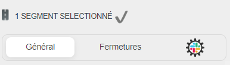
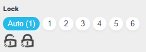

WME Send-To-Slack
dedicated to https://www.waze.com/editor


What's doing this script ?
- It's more easy to send requests about Lock, Downlock, Closure, Openning, and Validation of changes
- The requests are sent to a webhook to Slack or Discord
- The requests can be sent to a GForm too (currently only with the sames fields we have in BeLux)
- Thanks to that and to BertZZZZ's , we've got a spreadsheet that helps to promotion decision on L1-L3 levels
What's new ?
- This script currently support 20 countries and continuously growing
- This script now supports States, and i've added the USA NewYork, New Jersay, ...
What does it looks like ?
- The Validation link is on top of the Left collumn just above the settings tab

- The Lock and Downlock links are below the locking choice in the général tab
 - The Closure and Open links are ...? In the Closure Tab just above the Closure tab.
Just one thing, this part only shows if the closure layer is set

How to use it ?
- Like most of the scripts used by Waze editors, you need to install
A browser, but beeing here, i assume that's already the case...(Not Internet explorer or Edge)
Brave is the one i recommand
Tampermonkey extention
The script itself...
How to add a new country ?
- Complete this Google Form
How to send bugs or features ?
- If you have a new feature request, check this page to see if it isn't already in the list
- If your request isn't in the list or if it's a bug, you can submit it here